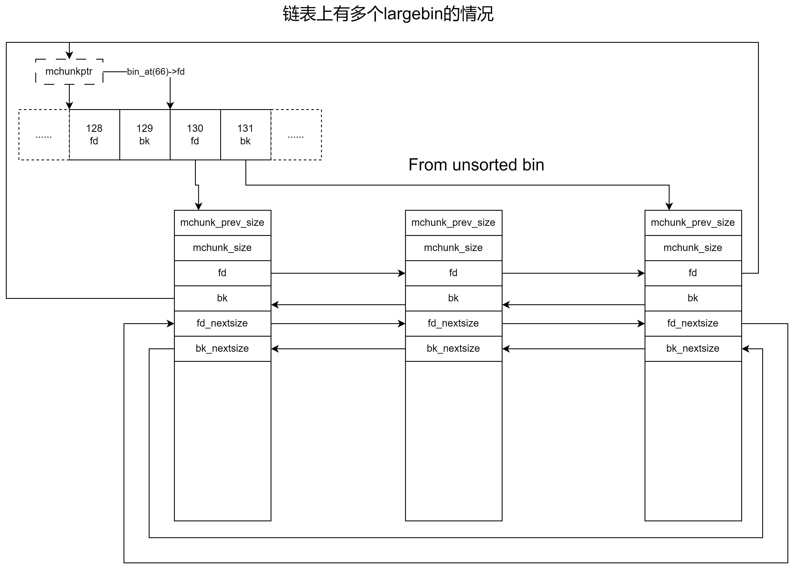

1、前言
一直对glibc的内存分配器的设计与实现感兴趣，之前一直没有下定决心以及抽出足够的时间进攻这个方向，最近抽出了几天对glibc的ptmalloc源码进行了梳理和研究，现在将研究成果梳理总结成文。
为什么要写这篇文章？相信很多读者对系统是怎样管理内存感兴趣，通过深入研究ptmalloc，读者可以深刻了解到系统是怎样减少内存碎片，如何提升多线程环境下的内存分配和释放的性能，这对读者更好地进行系统编程有着直接或间接的帮助。本文立足于glibc 2.26的源码，为了方便读者理解和方便笔者书写，着重介绍概念和运作原理，不会贴大段的代码，各位看官大可放心食用。最有本人水平有限，如有书写不当的地方欢迎大家联系我修改，欢迎大家加入技术讨论群：QQ185017593。
2、为什么需要内存分配器
图1展示了经典的64位Linux内存布局，就如图所示，一个Linux进程包含了代码段、数据段、bss段、heap区，mmap区、栈空间等等。大家写程序经常会和这些内存空间打交道，比如最常见的经过赋值的全局、静态变量的内存，往往会被放置在数据段(.data区)中，未进行赋值操作的全局、静态内存则会被放置在bss段中。此外，函数调用时自动开辟，调用结束时自动归还给系统的内存区域被称为栈空间，这些往往是编译器帮忙开辟和回收的空间，程序员无需自行管理这些内存[1]。
 图1
图1
不过大家在编写程序时，往往需要按需开辟和释放内存，这部分内存往往被称为“堆内存”，或者被叫做“动态内存”。实际上“动态内存”或许更加贴切，因为现代内存分配器，往往同时管理了heap区和mmap区，事实上也有很多地方[2][3]将它们统一成“堆内存”，在本文里，“堆内存”包括heap空间和mmap空间。本文核心讨论的两个函数是malloc和free，这也是ptmalloc的核心所在，相信读者在充分理解它们的运作原理后，通过阅读源码理解calloc、reallloc等函数也不是什么难事。
言归正传，回到为什么需要内存分配器的问题，如果物理内存是无限大的，那么用户只需要不断向操作系统索取即可，而不用管需不需要还回去，什么时候还回去，就好像吃饭用一次性碗筷，拿了饭菜就走，完全不用管。但是内存资源是有限的，因此使用动态内存，本质上是向系统“借”，有“借”就有“还”，让用户自己调用系统提供的内存分配和回收接口，往往会使问题变得复杂，因此将内存的底层管理统一交给内存分配器是个明智的选择。一个内存分配器往往具有以下特征：
- 抽象和简化内存管理：内存分配器为程序员提供了一个抽象层，使得动态内存管理更加容易和安全。
- 提高内存使用效率：操作系统通常以固定大小的块（如页）分配内存，这可能导致内存碎片和浪费。内存分配器可以通过跟踪小块内存的分配和释放来减少内存碎片，并提高内存的使用效率。
- 优化性能：直接使用操作系统的内存管理函数（如mmap()和brk()）可能不够高效，特别是在多线程环境下。内存分配器可以实现更高效的内存分配策略，如内存池（pooling）和缓存行对齐，以减少内存分配的开销。
- 支持复杂的数据结构：某些高级数据结构和算法需要特殊的内存分配模式，内存分配器可以提供这些定制化的内存管理策略。
- 改善内存碎片问题：长时间运行的程序可能会遇到内存碎片问题，内存分配器通过合并相邻的空闲块和使用不同的分配策略来减少外部和内部碎片。
- 支持并发和多线程：内存分配器可以被设计为线程安全的，从而允许多个线程同时进行内存分配和释放，而无需程序员手动处理同步问题。
ptmalloc在一定程度上做到了上述的几个点，在正式开始介绍它之前，本文首先通过一个简单内存分配器实现，来感受一下它存在的问题，比如内存碎片问题等，这样有助于读者更好的理解ptmalloc的设计哲学。
3、一个简单的内存分配器示例
本节将阐述一个简单的内存分配器运作原理，为了简化说明本节只涉及图1中的heap区。进程的heap区可以简化为如图2所示的样子，break线左边的区域是已经分配给进程的堆内存，右侧的区域则是未分配给进程的堆内存区域。移动break线是通过一个叫sbrk的系统函数来实现，该函数的声明如下所示：
void *sbrk(intptr_t increment);increment单位为byte，当increment为正数时，break线向右移动，也就是从操作系统获得新的堆内存空间。当increment为负数时，break线向左移动，也就是将increment字节的内存还给系统。当increment为0时，返回当前的break地址。
图2
现在需要对堆空间进行管理，像图2所示的这样一大块一大块的，肯定不好管理。比方说可用堆空间有1KB，但是用户现在只要40B的数据，总不能整块给过去吧？所以需要对堆空间重新组织，将其划分为一个又一个的块，本文将其称之为malloc_chunk。malloc_chunk的作用，就是供用户存储数据用的，它主要包含两个部分，一个部分是元数据部分(metadata)，一部分是用户数据部分。如图3所示，展示了两种malloc_chunk，一种是返回给用户使用的chunk，它们的数据区呈现为淡蓝色，粉红色则是元数据部分，元数据本质是malloc_chunk的头部信息，它最核心的作用就是标记malloc_chunk的字节大小，下一个地址相邻的malloc_chunk的位置，以及是否空闲(free)的标记，如果malloc_chunk被使用了，free则为0，如果未被使用free为1。另一种malloc_chunk则是未分配给用户，但是已经分配给应用进程的malloc_chunk，它同样包含了元数据部分和数据部分，只是数据部分未分配给用户，并且未被使用。注意图中的“pointer”指针，这个指针指向的地址，则是返回给用户使用的地址，元数据部分会被跳过。
 图3
图3
此时，假设用户调用了free函数，释放了图3中，“pointer”所指向的位置。代码如下所示：
free(pointer); 本节中的内存分配器首先会找到“pointer”所在的位置，然后找到与其相邻的前一个和后一个malloc_chunk，并且将处于free状态的chunk融合成一个，得到图4的结果。这样做的目的是尽可能整合空闲的malloc_chunk，使其利用率更高，并且减少内存碎片的发生。与break衔接的空闲malloc_chunk可视其为top chunk。
图4
读者们应该可以发现，malloc_chunk是在一个连续的地址空间内的，malloc_chunk之间实际上是通过链表来关联在一起的，在本文的示例中，释放一个malloc_chunk实际上是要遍历整个链表，并且找到“pointer”指针所在的地址位置，最后进行free标记修改和尝试进行前后相邻块的融合处理。接下来继续申请一个40字节的块，代码如下所示：
void* pointer = (void*)malloc(40);本节示例的内存分配器的分配逻辑如下所示：
- 遍历整个链表，查找是否有空闲的malloc_chunk，如果chunk_size等于申请的大小，则直接返回，分配逻辑终止。如果chunk_size大于申请的大小，则进行分裂处理，并且返回足额的部分，分配流程终止。如果chunk_size小于申请大小，则重复本步骤，如果到top chunk还没找到合适的malloc_chunk，则进入下一步。
- 从top chunk分裂一块malloc_chunk给用户，如果top chunk不够大，则右移break指针。
前面申请分配40字节，在当前的场景中就是从top chunk中分裂一个malloc_chunk出来，因为链表上的malloc_chunk都被使用了，分裂后得到图5的结果。读者应该可以看到，原来的一个malloc_chunk现在分裂成了两个。
图5
从当前的例子上看，一切似乎都很美好，几乎没什么内存碎片。不过实际的情况要复杂的多，在经历多次申请(malloc)和释放(free)后，内存的布局可能变成图6所示的情景。和前面论述的内容一样，图6中的红色方块和紧随其后的方块（蓝色或白色方块）代表一个malloc_chunk，蓝色malloc_chunk表示正在被用户使用，白色malloc_chunk表示可被分配的自由malloc_chunk。现在需要申请一块满足黄色块大小的malloc_chunk，此时则需要从左开始遍历整个链表，发现top chunk都没法满足大小要求，因此只能将break指针右移，然后将top chunk作为返回的malloc_chunk供用户使用。
这里需要补充的一点是，当free掉的内存块与原来的top chunk融合，并且top chunk的大小大于一个阈值（比如说128KB）后，可以将超过阈值的部分还给操作系统，即break指针左移。
图6
通过图6的例子，malloc_chunk链表中的许多自由块，因为多次的分裂和融合，导致留下了很多细碎的malloc_chunk，这些小的malloc_chunk由于不满足用户申请需要，而临近的malloc_chunk又被长期使用，因此很可能一直处于这种空闲状态，当这样细碎的malloc_chunk变得很多时，尽管单个malloc_chunk可能不是很大，但是数量很多的时候会造成极大的内存浪费。
本节示范了一个非常简单的内存分配器，它虽然简单，但是存在许多问题：
- malloc和free都需要遍历malloc_chunk链表，效率比较低是O(n)。
- 频繁地进行malloc和free操作，容易造成内存碎片，久而久之浪费大量的内存。
- 只适合单线程的情况使用。
尽管这是一个很简单的内存分配器，但是已经给大家展示了什么是内存分配器，以及内存分配器需要关注的问题，接下来将正式开始介绍ptmalloc。
4、ptmalloc的设计与实现
上一节介绍了一个简单的内存分配器，也通过这个例子让读者感受到内存分配器需要解决的一些核心问题。本节正式进入到ptmalloc的探讨之中，本文讨论的ptmalloc是运行在64位系统之下。
在开始论述之前，有一些术语需要先统一一下，文中所说的malloc_chunk包含了malloc_chunk的头部和用户申请的数据部分，而不仅仅指malloc_chunk头部结构。另外文中的malloc_chunk和内存块等价。用户申请的内存块大小，首先会进行尺寸重计算，最后内存块的大小是8的倍数，实际内存块可能比用户申请的要大一些，这样做的目的是尽可能内存对齐，并且减少内存碎片的产生，具体计算规则将在4.5节介绍。
4.1 为什么使用ptmalloc
ptmalloc很好地解决了内存碎片的问题，在内存分配上，通过划分bins的方式，在一些场景中使得分配效率为O(1)，极大提升了性能，同时ptmalloc也增加了多线程处理，尽可能让每一条线程都有自己的arena，也就是让每条线程尽可能自己管理缓存，因此在线程不过多的情况下，ptmalloc是个不错的选择。毕竟，前线的程序员只需要专心调用malloc和free函数来开辟和释放内存，而后方的ptmalloc要考虑的东西就很多了。
4.2 基本概念介绍
在正式进入ptmalloc的深入研究之前，先梳理一些基础概念，方便读者后续理解ptmalloc的运行机制。这些概念包括arena、fastbin、smallbin、largebin、unsorted bin、heap、top、remainder等。
arena可以视作是操作系统分配给应用进程的内存缓存池，arena包含了fastbin、smallbin、largebin、unsorted bin、heap、top和remainder。上一节展示的简单内存分配器的内存布局可以视为arena的雏形。如图7所示，ptmalloc的arena一共有两大类，分别是main arena和thread arena。其中main arena只有一个，thread arena可以有多个，理想状态下是一条线程独占一个arena，其中main arena通常一定被主线程占有，其他线程则占用thread arena。实际上，很多情况下，线程和arena的关系并非一一对应的，一个arena被多条线程占用也是常见的。本文将在后面介绍如何为线程分配arena，以及多线程如何安全使用arena。
图7
通过观察图7，读者应该可以看到，main arena和thread arena整体上类似，却又略有不同。main arena的内存只是虚拟内存的heap区，并且整个heap区都是它可以使用的范围，而thread arena则是通过mmap来开辟内存，因此其内存基本来自于虚拟内存空间的mmap区。从操作系统获取内存空间时，基本是按页对齐的方式（一页是4KB）。main arena的头部信息保存在malloc_par和malloc_state结构类型的静态变量中，从系统分配内存的起始堆空间地址用malloc_par变量的brk_base指针保存。malloc_state变量上包含了fastbin和bins数组，它们当中不同的slot将保存不同尺寸的malloc_chunk链表。图8展示了fastbin、bins和malloc_chunk的关系，fastbin中的第1个slot的位置对应了一个大小相等的malloc_chunk链表，虚线和虚线框代表它们的逻辑关系，而实线箭头则表示了它们真实的地址空间关系。malloc_chunk结构是一整个chunk的头部，它包含了指向了与之组成链表的下一个malloc_chunk的地址（这里需要强调一下，本文中malloc_chunk不仅指代metadata还包含了紧随其后的用户数据区）。类似的，bins数组的第0个slot也指向了堆空间的一个malloc_chunk。后面出现如图8所示的fastbin和bins上的链表时，请读者自己联想其真实的地址位置。
图8
图8展示了main arena的各个部分的关系，brk_base指针指向的内存空间被称之为“heap”，这个“heap”在main arena中在虚拟内存的heap区，在thread arena中则是在虚拟内存空间的mmap区。大家知道这两个东西在ptmalloc中被称之为“heap”就行了。main arena只有一个heap，因为虚拟内存空间中的整个heap区均是其可以使用的范围，所以当它想要拓宽可用空间时，地址往往可以是连续的，因此它的“heap”不需要组成链表。thread arena则不同，当原来的“heap”内存不够用时，它会从系统中申请大约1M的内存空间作为新的“heap”。mmap区是诸多thread arena共享的，因此它很难保证每次从系统申请的“heap”地址上是连续的，因此需要通过链表来将其链接。图9展示了这个关系，这里需要注意top指针的指向。
读者可能还要关注一个情况，就是“heap”中的malloc_chunk，顶多是使用和未被使用的malloc_chunk交替相邻排列，甚至基本是被使用过的malloc_chunk相邻排列，几乎看不到相邻的未被使用的自由malloc_chunk，这个原因是在free函数调用时，每一个被归还内存分配器的malloc_chunk均会尝试和相邻的前后malloc_chunk融合，未被使用的自由chunk基本都会被融合在一起，因此才会有这种情况。
图9
fastbin和bins的作用是将malloc_chunk组成单向或双向链表，供下次用户调用malloc函数时，快速筛选出合适的malloc_chunk供用户使用，这样做的目的是提升性能，在比较理想情况下，调用malloc函数的性能是O(1)。既然fastbin和bins是用来缓存malloc_chunk链表的，那么它们为什么要作为数组出现？现在分别对fastbin和bins作讨论，本节先从fastbin开始。
fastbin是用来存放小的malloc_chunk的，一般小于或等于176字节的内存申请（包括malloc_chunk头部和用户申请的字节数总和），会先尝试在fastbin中查找。fastbin可以存10个malloc_chunk链表，每个链表的malloc_chunk，在链表内部的大小是相同的。fastbin中不同的slot，代表不同尺寸的链表，读者可以参照图10所展示的内容来理解。fastbin上放置的均是单向链表。链表中相邻的malloc_chunk在“heap”中不一定相邻，这点一定要注意。
图10
bins的作用和fastbin类似，也是用来缓存malloc_chunk的，当调用malloc函数后，在fastbin中找不到合适大小的malloc_chunk时，就会到bins中查找。bins之所以会和fastbin分开存，是因为bins包含了smallbin、largebin和unsorted bin，并且它们是双向链表，bins要处理的情况更加复杂，此外，bins中有些链表的尺寸和fastbin中的也可能会重叠。虽然bins也是一个数组，由于glibc的ptmalloc使用了一些技巧，因此实际上数组的slot是254个，每两个slot和一个双向链表关联，所以针对bins的情况，统一用index来表示第1~第127个双向链表，而不是用bins数组的下标来表示。bins大约有127个双向链表，其中index为1的bin是unsorted bin，index为2到index为63是smallbin（index为2的bin是32B，index为63的bin是1008B，计算公式为index * 16），剩下的均是largebin。smallbin和fastbin一样，每个index对应的链表里的malloc_chunk都是一样大小的，其中最小的smallbin是总字节为32B的malloc_chunk的双向链表。
largebin和smallbin不一样，它的每个双向链表中的malloc_chunk大小可以不一样，最小的largebin是1024B也就是1KB，再小的就归smallbin管了。下表罗列了不同大小的largebin应该位于bins的位置。largebin中的双向链表，是按malloc_chunk的尺寸从大到小排列的（从头部到尾部）。
| bin index的值 | malloc_chunk大小范围 | 计算公式 |
|---|---|---|
| 64~96 | [1KB, 3KB] | 48 + floor(size / 64) |
| 97~111 | (3KB, 10KB] | 91 + floor(size / 1024) |
| 112~120 | (10KB, 40KB] | 110 + floor(size / 8192) |
| 121~123 | (40KB, 128KB] | 119 + floor(size / 65536) |
| 124~126 | (128KB, 512KB] | 124 + floor(size / 524288) |
| 126 | >512KB | 126 |
阅读到这里，细心的读者可能会问，为什么fastbin数组的下标是从0开始，而bins为什么要用以1为起始值的index来讨论呢？实际上在glibc的源码中，bins确实也是一个数组，下标也是从0开始的，但是这里它用了一个小技巧。由于bins中均是双向链表，双向链表就包含了fd（forward）指针和bk（backward）指针，要在数组中用到这两个指针，要么重新定义一个包含这两个指针变量的结构体T，并且定义T类型数组，要么就用一些技巧。malloc_state结构体中的bins数组，其每一个slot均代表一个8B的malloc_chunk指针变量，因此一个slot是没法存放两个指针变量的，bin index和bins数组下标的关系如图11所示：
图11
bin_at这个宏在源码中的定义如下代码所示，m表示malloc_state结构（前面有大致介绍，具体数据结构将在后文详细介绍），i就是前面所说的index。其中offsetof(struct malloc_chunk, fd)在64位系统下的值为16，因此bin_at(index)的值实际上是往前偏移了16字节，因为有了这个偏移，所以bin_at(index)->fd和bin_at(index)->bk才能访问到正确的位置。
/* addressing -- note that bin_at(0) does not exist */
#define bin_at(m, i) \
(mbinptr)(((char *)&((m)->bins[((i) - 1) * 2])) - offsetof(struct malloc_chunk, fd))那么bins里的malloc_chunk是如何组成双向链表的呢？如图12和图13所示，这里以largebin为例，展示了链表中只有一个largebin和多个largebin的情况。
图12
图13
unsorted bin和前面的bin都有些不同，它是最处于无序状态的，并且malloc_chunk的大小不一。在用户调用free函数时，ptmalloc首先会尝试将要释放的malloc_chunk放入fastbin中，如果条件不符合（尺寸太大），那么会直接塞入unsorted bin的头部。在后续继续调用malloc函数申请新的内存块时，ptmalloc会在合适的时机重新对unsorted bin里的malloc_chunk进行整理（将合适的块放入合适的bins双向链表中）。这个留到后续讨论，这里只需要理解unsorted bin的概念即可。
top本质是heap尾部的最后一个未被使用的malloc_chunk，读者回顾一下图7、图8和图9，malloc_state结构体变量的top指针指向的malloc_chunk就是top chunk。当fastbin、bins甚至是整理unsorted bin之后，都没有办法申请到内存块的时候，才会尝试到top chunk中分裂内存块出来。后文会有更详细的讨论。
remainder的概念比较特殊，从源码注释来看，它的作用主要是在连续分配小的内存块时，直接从last remainder中分裂，这样做的目的是尽可能保障内存块的连续性，为减少内存碎片做努力，毕竟频繁申请和释放小内存块容易造成内存碎片。会触发这种机制，实在以下条件均成立的情况下才有：
- 申请内存块时，已经在fastbin，smallbin中查找过，没有合适的内存块返回给用户。
- 在unsorted bin中，有且只有一个内存块，该内存块被当做remainder使用。
- remainder的大小大于申请的大小。
到目前为止，ptmalloc的基本概念就介绍完毕了，相信读者心中已经有了一个big picture。arena是一套集合，它几乎包含了ptmalloc进行内存管理的所有组件。fastbin和bins更像是分类缓存，把不同尺寸的内存块分类组成链表，供下次申请时获取，在很多情景下可以获得O(1)的性能a。其他的组件主要是为整套系统提供基础，后面将在此基础上详细讨论ptmalloc机制。
4.3 ptmalloc的基本数据结构
前面已经介绍过ptmalloc的一些基本概念了，现在开始对详细的数据结构进行介绍。首先要介绍的是最核心的数据结构malloc_state，其代码如下所示：
struct malloc_state
{
// 互斥锁，在多线程环境中使用
__libc_lock_define(, mutex);
// 设置标记，比如NONCONTIGUOUS_BIT表示无法从堆空间中获取连续内存时设置
int flags;
// fastbin有内存块时设置为true，否则设置为false
int have_fastchunks;
// 前文介绍的fastbin数组
mfastbinptr fastbinsY[NFASTBINS];
// 前文介绍过的top chunk指针
mchunkptr top;
// 前文介绍过的remainder内存块指针
mchunkptr last_remainder;
// 前文介绍过的bins数组
mchunkptr bins[NBINS * 2 - 2];
// bins数组的bitmap设置，BINMAPSIZE的值为4。
// 在binmap中可以存4个32bit的无符号整数值。
// 这些整数值的每一个bit与bins数组的下标对应，对应的bit为0则表示该bin的链表为空，bit为1则表示非空
// 用于快速筛选出bins上非空的链表。
unsigned int binmap[BINMAPSIZE];
// arena可能存在多个，它们会被组成链表，线程要挂载arena时，可能需要遍历这个链表查找可用的arena。
struct malloc_state *next;
// 空闲arena链表，线程优先从空闲链表中获取arena。
struct malloc_state *next_free;
// 一个arena可能被多条线程挂载，这个变量是记录有多少条线程使用这个arena。
INTERNAL_SIZE_T attached_threads;
// 这个arena从系统分配的内存总量。
INTERNAL_SIZE_T system_mem;
INTERNAL_SIZE_T max_system_mem;
};有了前文对基础概念的介绍，上述代码中的注释已经能够充分解释对应字段的含义，这里贴出数据结构主要是希望让读者对真实结构有更完整的认识。接下来要介绍的是malloc_chunk结构，其代码如下所示：
struct malloc_chunk
{
// 当"heap"中，前一个与自己相邻的块为空闲块时，表示其大小，单位为Byte
// 该块不是空闲状态，那么这个字段可能是前一个块数据区的一部分
INTERNAL_SIZE_T mchunk_prev_size;
INTERNAL_SIZE_T mchunk_size; // 包括头部在内的内存块大小，单位为Byte
// 在fastbin和bins中使用的forward和backward指针，仅仅在内存块为空闲块时有意义
struct malloc_chunk *fd;
struct malloc_chunk *bk;
// largebin双向链表指针，仅在largebin为空闲内存块时有意义
struct malloc_chunk *fd_nextsize; /* double links -- used only if free. */
struct malloc_chunk *bk_nextsize;
}; malloc_chunk有两种，一种是空闲状态的未被分配内存块，一种则是已经分配返回给用户的已分配内存块，它属于哪种类型，直接决定了其中的部分字段的含义。现在请读者观察图14的情况，它展示了在堆空间中最经典的几种布局情况，前文也有提到过，在“heap”空间中，不存在相邻的两个处于空间状态的内存块，因为如果存在，也已经被进行融合处理，因此一个空闲的内存块，地址相邻的两个内存块要么是系统未分配给当前arena的地址空间，要么是已经分配给用户的内存块。内存块malloc_chunk头部的mchunk_prev_size字段，在前一个邻居为已分配给用户的内存块时，它将作为前一个内存块数据区的一部分。空闲的内存块不是重点，重点是已经分配给用户的非空闲块，当它前一个地址相邻的邻居为空闲块时，它的mchunk_prev_size字段标记的是邻居的整块内存大小。当它的前一个地址相邻的邻居为非空闲块时，该字段也会作为邻居数据区的一部分。
图14
这样做的目的很简单，就是为了尽可能地节约内存空间，试想一下，每个内存块（malloc_chunk）都要占据16字节的头部，那将是非常大的浪费。此外，mchunk_size字段的最低3个bit另有他用，它们代表内存块的不同属性和状态，在使用mchunk_size获取内存块大小时，往往会用掩码将最后3个bit清掉，因为内存块大小一定是8的倍数，这也是为什么最低3 bit可以当做标记来使用的原因。
3个bit分别代表不同的含义，这里用缩写N、M、P来表示。N表示NON_MAIN_ARENA，如果内存块不是从main arena获取的话，该bit会被设置为1，否则设置为0。M表示IS_MMAPED，如果内存块是通过mmap直接分配，那么调用free函数释放内存块的时候，将直接调用unmap函数回收。一般来说只有申请的内存块大于一定阈值的时候（比如128KB）才会直接调用mmap开辟内存块，并且设置其M bit为1，且直接返回给用户。这里需要注意的是，thread arena在调用mmap获得“heap”时，并不会设置它的IS_MMAPED位为1。以下是这几个属性的宏定义：
#define PREV_INUSE 0x1
#define prev_inuse(p) ((p)->mchunk_size & PREV_INUSE)
#define IS_MMAPPED 0x2
#define chunk_is_mmapped(p) ((p)->mchunk_size & IS_MMAPPED)
#define NON_MAIN_ARENA 0x4
#define chunk_main_arena(p) (((p)->mchunk_size & NON_MAIN_ARENA) == 0)
#define set_non_main_arena(p) ((p)->mchunk_size |= NON_MAIN_ARENA)
#define SIZE_BITS (PREV_INUSE | IS_MMAPPED | NON_MAIN_ARENA)
// 求内存块的内存大小，会将最后3 bit通过掩码清空
#define chunksize(p) (chunksize_nomask(p) & ~(SIZE_BITS))
#define chunksize_nomask(p) ((p)->mchunk_size) 然后要介绍的就是P bit，它表示前一个地址相邻的内存块是否处于分配状态，如果P=0则表示未分配，邻居是空闲状态。如果P=1表示已分配，mchunk_prev_size将作为邻居的数据区的一部分。
尽管最终用户申请的内存块大小一定是8的倍数，实际上这是被调整过经过对齐处理的值，最终用于申请内存块的大小值，比用户传入malloc函数实际的值要多8~23字节。什么叫做最终内存块大小呢？比方说用户调用如下代码来获取内存块：
void* p = (void*)malloc(40);传入的参数是40，但是它不是最终向内存分配器申请内存的大小，这个值会进行一次调整，它会被调整成48。也就是说，最终向内存分配器申请内存的值，一定会比从malloc函数传入的，用户请求的实际需求值大，而且这个范围在8~23字节，这个换算是用下面展示的request2size宏来计算的。
由于申请的内存块至少比实际需要多8个字节，这8个字节刚好是mchunk_size字段的长度（注意，本文只讨论64位环境下的情况）。根据如下代码，可以计算出MINSIZE为32，MALLOC_ALIGNMENT为16，request2size宏最终得到的结果比传入参数req多8~23字节，得到的结果才会以此大小为基准去查找或获得内存块。
#ifndef INTERNAL_SIZE_T
# define INTERNAL_SIZE_T size_t
#endif
#define MIN_CHUNK_SIZE (offsetof(struct malloc_chunk, fd_nextsize))
/* The corresponding word size. */
#define SIZE_SZ (sizeof (INTERNAL_SIZE_T))
#define MINSIZE \
(unsigned long)(((MIN_CHUNK_SIZE + MALLOC_ALIGN_MASK) & ~MALLOC_ALIGN_MASK))
#define MALLOC_ALIGNMENT (2 * SIZE_SZ < __alignof__ (long double) \
? __alignof__ (long double) : 2 * SIZE_SZ)
#define MALLOC_ALIGN_MASK (MALLOC_ALIGNMENT - 1)
#define request2size(req) \
(((req) + SIZE_SZ + MALLOC_ALIGN_MASK < MINSIZE) ? MINSIZE :
((req) + SIZE_SZ + MALLOC_ALIGN_MASK) & ~MALLOC_ALIGN_MASK)最后要介绍的是mfastbinptr和mchunkptr，它们都是malloc_chunk* 的typedef类型，也就是说本质上是内存块指针。到这里就完成基本数据结构的论述了。
4.4 ptmalloc的初始化流程
本节将介绍ptmalloc的初始化流程。读者从网上下载glibc的源码压缩包之后再解压到本地，ptmalloc的源码就在glibc目录下的malloc目录之下。大家使用malloc和free函数的经历，基本上是没有显式地调用过malloc的初始化函数，但这并不意味着ptmalloc就没有进行初始化操作，初始化会在首次调用malloc函数的时候执行。这里的初始化，指的是整个ptmalloc的初始化，即初始化main arena并且将其关联到主线程的流程。
malloc和free函数的声明是在glibc/malloc/malloch.h文件中，它们加了extern关键字修饰，说明它是全局可见，能够在其他文件被定义一次。大家可以在malloc.c文件中找到，malloc函数和free函数实际上是被设置了一个别名 __libc_malloc和 __libc_free。本文并不打算对 __libc_malloc和 __libc_free函数的实现逻辑逐行进行解析，这里的目标是为了说明，ptmalloc绝大多数核心逻辑的入口在哪里，这样读者在读懂本文之后，回归源码进行逻辑验证时，可以很快找到对应的代码逻辑。
// malloc/malloc.h
/* Allocate SIZE bytes of memory. */
extern void *malloc (size_t __size) __THROW __attribute_malloc__ __wur;
/* Free a block allocated by `malloc', `realloc' or `calloc'. */
extern void free (void *__ptr) __THROW;
// malloc.c
strong_alias(__libc_free, __free) strong_alias(__libc_free, free)
strong_alias(__libc_malloc, __malloc) strong_alias(__libc_malloc, malloc)本节要讨论的初始化流程也是发生在 __libc_malloc函数中的，在首次调用 __libc_malloc函数时，初始化操作就会触发。判断是否执行初始化逻辑的是一个函数指针变量： __malloc_hook，这个钩子会在程序启动时，默认赋值一个函数地址：malloc_hook_ini，也就是说初始化逻辑会在这个函数里执行。
// malloc/malloc.c
void *weak_variable (*__malloc_hook)(size_t __size, const void *) = malloc_hook_ini;
...
void *
__libc_malloc(size_t bytes)
{
mstate ar_ptr;
void *victim;
void *(*hook)(size_t, const void *) = atomic_forced_read(__malloc_hook);
if (__builtin_expect(hook != NULL, 0))
return (*hook)(bytes, RETURN_ADDRESS(0));
...
}
...这个初始化函数只会被执行一次，malloc_hook_ini函数在执行的最后，会将 __malloc_hook置为NULL，因此下次再次调用 __libc_malloc函数时，不会再次触发钩子，这个初始化函数执行的逻辑，基本包含在了ptmalloc_init函数里了。
// malloc/malloc.c
static void *
malloc_hook_ini (size_t sz, const void *caller)
{
__malloc_hook = NULL;
ptmalloc_init ();
return __libc_malloc (sz);
} 每条线程被创建时，都会分配一个线程本地持有的变量thread_arena指针变量，这个变量只对持有它的线程可见，其他线程不可访问指针变量本身。一个应用进程被启动之后，首先被执行的线程就是主线程，此时主线程的thread_arena指针也是NULL值，前文提到过，主线程持有的arena是main arena，其他线程持有的是thread arena，这里需要注意的是，thread arena指针和thread arena是两个东西，前者是具体持有arena地址的指针，它既可以持有main arena的地址，也可以保存thread arena的地址。一个是指针变量，实现层面的东西，一个是概念层面的东西，切记不要混淆。当前所说的初始化流程，实际上就是在主线程上执行的。
前文也提到过main arena和thread arena的区别，malloc_state结构体是整个arena的核心，实际上它包含了几乎是所有arena涉及的东西，main arena对应的malloc_state结构体类型的变量是个静态变量，并且已经对部分字段赋了初值，比方说对main_arena的互斥锁变量赋了初值，关联线程数也被设置为1，因为默认主线程就是main_arena挂载的。这里需要关注一个结构体，就是malloc_par结构体，它包含了很多关键参数，比方说top chunk的最小大小，最多分配直接mmap内存块给用户使用的数量，直接从mmap区开辟内存块给用户使用的阈值等等，此外它还持有保存main arena起始地址的brk_base指针（读者可以回顾一下图7和图8）。malloc_par类型的静态实例，不仅包含了main arena独有的brk_base指针，还有其他关键的阈值参数，及计数变量是所有arena共享的。
// malloc/malloc.c
/* There are several instances of this struct ("arenas") in this
malloc. If you are adapting this malloc in a way that does NOT use
a static or mmapped malloc_state, you MUST explicitly zero-fill it
before using. This malloc relies on the property that malloc_state
is initialized to all zeroes (as is true of C statics). */
static struct malloc_state main_arena =
{
.mutex = _LIBC_LOCK_INITIALIZER,
.next = &main_arena,
.attached_threads = 1
};
static struct malloc_par mp_ =
{
.top_pad = DEFAULT_TOP_PAD,
.n_mmaps_max = DEFAULT_MMAP_MAX,
.mmap_threshold = DEFAULT_MMAP_THRESHOLD,
.trim_threshold = DEFAULT_TRIM_THRESHOLD,
#define NARENAS_FROM_NCORES(n) ((n) * (sizeof(long) == 4 ? 2 : 8))
.arena_test = NARENAS_FROM_NCORES(1)
...
};
... 初始化的逻辑非常简单，就是将main_arena的地址赋值给主线程关联的thread_arena指针变量上，同时初始化fastbin和bins数组。此时如果有其他工作线程创建，它们持有的thread_arena指针仍然是NULL值，初始化的结果如图15所示。这里需要注意的是bins内部的fd和bk指针，以及top指针指向的箭头，bins初始化的方式，实际上就是让双向链表内部的fd和bk指针指向自己的起始地址，这一点读者可以回顾一下图11的情况就能明白。top指向自己，也是为了后续调用top->mchunk_size获得top的大小时，偏移到last_remainder的地址上，由于last_remainder赋值为NULL，所以top->mchunk_size获得的值为0，也就是top chunk大小为0，当ptmalloc获得top chunk的大小为0时，则会从新从堆空间中开辟一块内存，并且将首地址赋值到malloc_par变量的brk_base指针上。
图15
看到这里，读者可能会有疑问，如果主线程没调malloc函数，那么是否存在main arena的地址就不会赋值到主线程的thread_arena指针上了呢？确实存在这种可能性，比方说主线程什么东西都没做，确实没调用到malloc函数，那么也不会去和main arena关联起来。但是会不会存在main arena挂载到其他线程上呢？答案是绝无可能，原因是比方用pthread_create函数创建线程，pthread_create函数内部也会调用malloc函数，pthread_create函数是在主线程上执行的，所以相当于在多线程环境下，主线程是第一个调用malloc函数的线程，所以main arena基本会和主线程关联。
thread arena的初始化流程，发生于创建thread arena的时候，arena内部的处理也和main arena的处理类似，只是malloc_state和heap_info结构是mmap出来的空间的一部分，而非静态变量，读者们可以参考图7。这里需要注意的是，thread arena的top chunk在初始化完成之后是存在的，并不像main arena那样暂时不开辟堆空间给main arena，这是因为thread arena一次就是开辟1MB的内存空间。到这里，ptmalloc的初始化流程就介绍完了。
4.5 单线程场景分析
本节将通过一系列的实例，来展示ptmalloc的主要运作流程。ptmalloc的内存分配过程并不非常复杂，调用malloc函数的流程大致如下所示：
- 1）先使用request2size宏，对从malloc函数传入的参数进行对齐处理，记为req_size。
- 2）计算req_size位于fastbin中的位置（使用fastbin_index(req_size)获得），如果对应的链表为非空，则取首个内存块返回给用户，否则进入下一步。
- 3）如果req_size处于smallbin的范围（小于1024B），则先查找req_size位于bins数组的位置（使用bin_index(req_size)获得），如果链表为非空，则取首个内存块返回，否则进入下一步。
- 4）如果在fastbin或者smallbin中没找到合适大小的内存块，那么就有两种情况，一种是确实没有合适大小的内存块，一种是内存块比较大，要到largebin中查找。到这里不论如何，首先都要对unsorted bin进行一次重排处理。unsorted bin是bins的第一个链表，它包含了各种大小的内存块，一个内存块在调用free函数进行释放时，如果不能放入fastbin中，就会直接塞到unsorted bin的首部。目前到这一步，就要从unsorted bin的第一个内存块开始遍历。
- 4-1）如果unsorted bin中有且只有一个内存块，且内存块大于要求大小加上MINSIZE（32B），并且该内存块是last remainder，那么直接从中分裂出一块req_size大小的内存块返回，余下的部分继续做remainder，这样处理的目的是尽可能使小块内存连续，减少内存碎片，如果这一步不满足，则进入步骤4-2。
- 4-2）判断从链表中取出的内存块，如果大小刚好是req_size，那么直接返回内存块地址，流程终止。如果内存块的大小不符合要求，则将内存块从unsorted bin中移出，放入适合它大小的bins槽位上，插入对应的双向链表的首部（smallbin）或插入合适的位置，使得内存块大小从大到小排序（largebin）。取出链表中的下一个内存块，如果存在则重复本步骤，如果不存在则进入步骤5）。
- 5）如果申请的内存块大小属于largebin范畴（大于1024B），则进入此步骤，否则进入步骤6）。通过申请的内存大小计算出bins数组的下标，找到对应的largebin双向链表，从中找到一个大小合适的内存块，如果能找到且剩余内存大小大于MINSIZE（32B），则分裂这个块，并把剩余内存块放入unsorted bin中，流程终止。如果能找到，但是剩余内存大小小于MINSIZE，则整块返回，并且流程终止。如果找不到则进入步骤6）。
- 6）走到这一步，不论申请内存块大小是smallbin还是largebin，都说明前面步骤没有找到合适的内存块返回。这个步骤先根据req_size计算出其位于bins中的index，然后查找对应链表是否有合适的内存块大小，如果没找到index不断增大，查找尺寸更大的内存块链表。
- 6-1）如果req_size属于smallbin的范围，并且找到合适大小，如果找到的内存块大于req_size+MINSIZE，那么分裂它，并将剩余块放入unsortedbin中，且将这个分裂剩余块设置为last remainder。如果找到的内存块大于req_size并且小于req_size+MINSIZE，则整块内存块返回。如果没找到，则index自增，去下一个存放更大内存块的双向链表中查找，如果下一个链表属于smallbin则重复此步骤，否则进入步骤7.
- 6-2）如果req_size不属于smallbin，或者属于smallbin但是在smallbin中没找到合适大小的内存块，那么进入到largebin的范畴（index大于63就进入到largebin的范围了）。首先从largebin链表中，最小的内存块开始遍历，查找合适大小的内存块（链表中比req_size大的最小内存块），当largebin内存块大于req_size+MINSIZE时，则分裂该largebin，并将剩余块放入unsorted bin中。如果largebin内存块小于req_size+MINSIZE，则直接返回整个内存块。如果遍历了整个bins都没找到合适的内存块，则进入下一步。
- 7）此时需要去top chunk中申请了，一共分几种情况：
- 7-1）top chunk大于等于req_size+MINSIZE，分裂出req_size大小的内存块返回，并且将剩余块设置为新的top chunk。
- 7-2）top chunk小于req_size+MINSIZE，且所有的fastbin中有内存块，则尝试对fastbin中的内存块进行融合处理，返回步骤4）。
- 7-3）top chunk小于req_size+MINSIZE，且所有的fastbin都为空，则直接从系统申请新的内存块（拓展top chunk，或者开辟新的top chunk，这点后面详细介绍）。
以上就是malloc开辟内存块的大致流程，不管是main arena还是thread arena都是差不多。不过这里有几点需要注意：
- 申请内存时，首先会去fastbin中找，首先会根据req_size就算出其在fastbin中的index，如果对应index的链表为空，也不会去找其他的fastbin。也就是说此时如果对应index的fastbin链表为空，不代表所有的fastbin链表为空。
- smallbin中也有小内存块的链表，最小的是32B的。
- unsorted bin的重新排序处理，只会让内存块返回到bins中，而不会直接放入fastbin中。
- unsorted bin在进行重排处理的过程中，在unsorted bin链表中的内存块，会尝试和自己地址相邻的前一个和后一个空闲内存块合并成一个大的内存块（如果前后都是空闲内存块，它们会从各自的bins链表中移除），然后在放入对应的bins双向链表中。
- 为了避免本节的篇幅过长，top chunk的一些细节描述被忽略了，后续将会在例子里详细说明，这里只是为了给读者一个大概的流程感知。
现在，对malloc函数的内存分配逻辑的描述，就暂时告一段落，现在开始对free函数的运作流程进行说明。
- 1）先获取被释放的内存块p的大小，记为fsz。
- 2）判断fsz是否在fastbin的范围内？如果是，计算fsz对应的fastbin index，并放入对应的fastbin链表的首部。如果不是进入步骤3）。
- 3）判断与p相邻的堆空间的下一个内存块是否是top chunk？如果是，则将top指针指向p，将原来的top chunk和p融合成一个空闲块，如果不是则进入步骤4）。
- 4）获取与p前后相邻的堆空间邻居，尝试融合成更大的空闲块（前后邻居均是空闲块，则融合成新的空闲块，还是将新空闲内存块记为p），然后塞入unsorted bin中。
- 5）如果释放的内存块达到合并fastbin的阈值（比方说64k），那么将遍历整个fastbin，尝试对fastbin中的每一个内存块与其在堆空间的邻居进行融合处理，最后塞入到unsorted bin中。这样做的目的可能是遇到了连续开辟内存很频繁的情况，因此先回收融合，再统一分配，减少后续使用时产生更多的内存碎片。
本节阐述了malloc函数和free函数的主要流程，有些特殊的情况，并没有完全写在里面，比如ptmalloc如何将内存还给系统，什么情况下直接调用mmap开辟一大块内存直接返回给用户，什么时候释放的内存块不在arena中处理，直接调用unmmap函数释放，这些特殊的情况将在接下来的例子描述中得到解答。
4.5.1 第一个例子：初始化后的首次分配
本节将接着图15的情况继续往下推演。假设现在调用如下的逻辑，ptmalloc会如何运作呢？
void* p = (void*)malloc(40);
free(p);先来看调用malloc函数这个部分，传入的参数为40字节，这是用户申请的字节数，首先要对这个数字使用前面介绍过的方式进行对齐处理（使用request2size宏来处理），得到最终的实际向ptmalloc内存分配器申请的字节数为48B。这个大小属于fastbin的范畴，因此需要计算它的fastbin index，现在通过fastbin_index宏来计算，得到1。调用fastbin(1)获得对应槽位的链表。根据图15得到的结果是，该链表为空，因此现在进入malloc函数运作流程的步骤3）。
/* offset 2 to use otherwise unindexable first 2 bins */
#define fastbin_index(sz) \
((((unsigned int)(sz)) >> (SIZE_SZ == 8 ? 4 : 3)) - 2)
#define fastbin(ar_ptr, idx) ((ar_ptr)->fastbinsY[idx])由于48B在smallbin的范围内，此时要用bin_index宏计算smallbin的index值，调用bin_index(48)的结果为48 >> 4 = 48 / 16 = 3，然后使用bin_at(3)获得对应的双向链表。在图15的情况中，它仍然是空的链表。此时进入步骤4）。此时需要对unsorted bin进行重排处理，由于unsorted bin此时为空，因此直接进入步骤5）。
#define smallbin_index(sz) \
((SMALLBIN_WIDTH == 16 ? (((unsigned)(sz)) >> 4) : (((unsigned)(sz)) >> 3)) + SMALLBIN_CORRECTION)
#define bin_index(sz) \
((in_smallbin_range(sz)) ? smallbin_index(sz) : largebin_index(sz))由于48B不属于largebin的范畴，因此直接进入步骤6），此时对48B重新计算index，仍然是3，bin_at(3)仍然是空链表，因此进入到步骤7），从top chunk中取内存块。由于此时top chunk的大小为0，因此需要从系统中申请一大块内存（top_pad+MINSIZE+申请大小，得到的结果再向上页对齐，其中top_pad默认是128KB），得到图16的情况。
图16
本例中malloc函数的逻辑就完成了，接下来则是进行调用free函数流程的处理，回顾一下4.5节中对free函数的通用流程描述。首先计算p的大小，得到48B，由于48B在fastbin的范畴内，因此计算fastbin index，将p直接放入fastbin中，得到图17的结果。从图可以看到，作为fastbin的p此时的状态并没有发生改变，只是直接被塞入fastbin对应槽位的链表中，因此fastbin在unsorted bin进行重排操作时，是不参与融合处理的。小内存块放入fastbin中，一方面是为了提升开辟内存的效率，另一方面是为了减少内存碎片。
图17
到这里为止，就完成第一个例子的论述了。
4.5.2 第二个例子：在例1的基础上继续分配一个大于top大小的内存块
现在接着图17的结果，继续本文的第二个例子。现在来看一段代码，先从ptmalloc申请256KB的内存，然后释放它。
void* p = (void*)malloc(262144);
free(p); 由于申请的内存超过了malloc_par结构体变量定义的mmap_threshold的上限（128KB），因此此时ptmalloc是直接调用mmap去开辟256KB的内存返回给用户。这个被返回的内存块，此时会设置一个标记IS_MMAPED。尔后就是调用free函数释放掉它了，由于被释放的内存块p被标记为IS_MMAPED，因此此时是直接调用unmmap函数将p内存块回收。另一种回收的情景是，当释放的内存块经过和堆空间相邻的块合并（或者不合并）后，大小超过一定的阈值（比如64KB），则会先尝试将fastbin中的内存块进行融合处理（每个内存块尝试和相邻的堆内存空间融合），最后将top chunk的一部分返还给系统（比如top chunk保留128KB）。
看完top chunk处理的第一个例子，现在来看另外一个例子，假设图17中的top chunk空闲块只有48KB，现在执行如下代码：
void* p = (void*)malloc(64*1024);
free(p);此时malloc函数申请64KB的内存，fastbin中没有满足的内存块，于是到bins找，也没找到。unsorted bin是空的，因此直接到top chunk中申请，由于此时申请的内存是大于top chunk的，因此要对top chunk进行拓展。在main arena中，只要虚拟内存的heap空间足够，top chunk的拓展在大多数情况下是能成功的，此时main arena获得的是一块地址连续的top chunk，在这种情况下，流程就和4.5.1中的例子类似，这里不再赘述。如果拓展连续地址失败，那么会尝试从mmap区开辟一块内存块出来，作为新的top chunk，而老的top chunk就会直接放入unsorted bin中，如图18所示：
 图18
图18
在本例中，虽然unsorted bin中只有一个唯一的内存块，但是它不会被设置成last remainder，因为只有内存小于1KB的smallbin，才有机会成为last remainder。
4.5.3 第三个例子：从unsorted_bin上的内存分配与重排处理
现在以图19的情况，对unsorted bin的内存分配和重排处理进行说明。在图19中，unsorted bin只有一个内存块，并且小于1024B，是个last remainder，现在执行如下代码：
void* p = (void*)malloc(56);
...
free(p);图19
首先是执行malloc函数，传入的参数为56，对齐处理之后变为64，此时需要从内存中分配64B大小的内存出来。由于fastbin中没有合适的内存块，因此到smallbin中查找，发现也没有，此时需要在unsorted bin中作处理了。由于unsorted bin有且只有一个内存块，且小于1024B，是个last remainder，因此可以直接从中分裂出新的内存块，得到图20的结果。
图20
此时调用free函数释放p，那么内存块p是直接进入fastbin的，得到图21的结果。当然，如果后续还有连续的小块内存开辟，还是会从last remainder中分裂出来。fastbin虽然是直接放入fastbin数组中的链表，但是也会在合适的时机，对所有的fastbin进行融合处理，融合成一个更大的内存块，这也是为什么需要单独整一个last remainder的原因，因为数量众多的小块内存，往往会在一起批量创建。至于fastbin融合的时机主要有两个，一个是free操作时，free掉的内存块在尝试和堆空间中的邻居融合之后的大小，大于64KB，或者直接开辟一块largebin大小的内存块，但是bins中没有时，均会进行一次fastbin融合处理。
图21
如图22所示，假设此时要申请一块1024B的内存，由于bins中没有，所以要对所有的fastbin做一次融合处理。读者应该可以观察到，fb1-fb5全部融合成一块，甚至原来的last remainder也被融合进去了，且从unsorted bin中移除。新合并后的内存块则重新被塞入unsorted bin中。如果此时的ub1是1024B，那么直接从unsorted bin中返回，否则先计算ub1的bin index，再放入对应的双向链表中的尾部，然后再进行排序处理，最后再分裂出一块内存返回给用户，将剩余部分放入unsorted bin中。
 图22
图22
4.5.4 第四个例子：从smallbin和largebin上分配内存
本节开始一个全新的例子，当前fastbin和bins的布局如图23所示，现在调用malloc函数申请40字节的内存块。第一步经过对齐处理，得到最终要申请的内存块为48B。由于fastbin中没有合适的内存块，因此到smallbin中查找，也没找到，此时需要对unsorted bin进行重排处理。
void* p = (void*)malloc(40);图23
经过重排的结果，如图24所示，内存块s1被放入bin_at(63)，内存块l3被插入bin_at(64)，并且被重新由大到小排序。
图24
此时重新计算48B的bin index，得到2，然后从bin_at(2)开始，不断往右边查找链表，一直找到bin_at(63)，并取出唯一的内存块s1，将其分裂出48B以后，将剩下的内存块放入unsorted bin，由于剩下的部分属于smallbin的范畴，所以被标记为last remainder。结果如图25所示。
 图25
图25
接着图25的情况继续，此时调用malloc函数，要求最终开辟1KB的内存块。在fastbin和smallbin中没有找到，unsorted bin中也没找到合适的内存块，由于此时申请的内存块属于largebin的范畴，当fastbin不为空时，首先要对fastbin进行融合处理，得到图26的情况。
图26
由于unsorted bin重排之后，bins中没有合适的内存块，因此需要从top chunk分裂出来，得到图27的结果。
图27
到这里为止，ptmalloc相关的例子就讨论完了，例子并不是很全面，只是挑选了一部分内容来说明，这里留一个随堂小作业给读者，如果图25中的s1内存块分完了，再申请一个48B的内存块，此时的处理流程会是怎样的？相信读者根据4.5节开头的通用描述中，能够快速找到答案。
4.6 多线程情景分析
上一节花费了很大篇幅论述了单个arena的结构和运作流程，本节要对多线程的情况进行综合说明。
4.6.1 arena分配上限
前文已经提到过，理想状态下，ptmalloc会为每条线程分配唯一的arena，但是这种情况并非总是存在的。因为arena的数量是有上限的，否则线程数过多，可能会导致巨量的内存浪费。arena的数量上限，和cpu核心数有关系，也和操作系统位数有关系，在64位系统中，arena的数量为CPU核心数 * 8。
4.6.2 线程如何获取arena？
回顾一下malloc_state结构，读者可以看到它有一个next指针，这个next指针是用于将arena组成链表用的。当调用malloc函数开辟内存块时，ptmalloc会经过如下步骤：
- 1）检查线程本地变量thread_arena指针是否为空：
- 1-1）如果不为空，则直接尝试锁住该arena，并执行4.5阐述过的开辟流程。如果该arena已经被锁住，则投入睡眠等待（用的互斥锁）。
- 1-2）如果为空，则进入步骤2）。
- 2）遍历arena链表，计算arena总数是否小于上限：
- 2-1）如果是，则开辟新的arena，并和当前线程直接关联，并进入4.5阐述过的开辟流程。
- 2-2）如果arena总数已经达到上限，则遍历arena链表，逐个尝试加锁，加锁成功则关联该arena，并进入4.5阐述的开辟流程。如果遍历整个链表都没有加锁成功，则直接和main arena关联，并投入睡眠等待main arena使用完，再接着使用。
4.6.3 跨线程返还malloc_chunk
前文已经提到过，ptmalloc的arena一共有两类，一类是main arena，另一类是thread arena。其中main arena在初始阶段是不分配任何堆内存空间的，真开始申请的时候才去分配，main arena可以支配的动态内存空间，实际上是虚拟内存空间的整个heap区域。
thread arena则不同，它的arena完全是mmap开辟的，每次为thread arena开辟的内存空间大约是1MB，malloc_state和heap_info结构体变量，也是这块被开辟空间的一部分。并且起始地址是对齐过的。thread arena开辟内存空间的逻辑如下所示：
p1 = (char *)MMAP(0, HEAP_MAX_SIZE << 1, PROT_NONE, MAP_NORESERVE);
if (p1 != MAP_FAILED)
{
p2 = (char *)(((unsigned long)p1 + (HEAP_MAX_SIZE - 1)) & ~(HEAP_MAX_SIZE - 1));
ul = p2 - p1;
if (ul)
__munmap(p1, ul);
else
aligned_heap_area = p2 + HEAP_MAX_SIZE;
__munmap(p2 + HEAP_MAX_SIZE, HEAP_MAX_SIZE - ul);
}
else
{
...
} 其中HEAP_MAX_SIZE为1MB，HEAP_MAX_SIZE << 1就是2MB。p2指针的值，则是(p1 + 0xfffff) & 0xfffffffffff00000，也就是说p2的地址一定是和M对齐的，比方说0x100000、0x200000、0x300000…。这个就是thread arena的起始地址，观察一下图7，thread arena开头部分是heap_info结构，这个结构的起始地址就是thread arena的起始地址。
接下来的一个问题则是，为什么要这样设置thread arena的起始地址？我认为主要有两个原因，第一个是，由于创建一个新的thread arena，一次就是开辟1MB的内存，知道了起始地址，也就方便计算结束地址。另一个原因则是，只要是从这个arena开辟的内存块，其地址只需要和0xfffffffffff00000作bit and运算，就可以得到该arena的起始地址，进而获得heap_info结构体，再从heap_info结构体中获取malloc_state结构体实例的地址，然后再进行各种操作。
虽然thread arena开辟就给1MB的空间，但是真正标记为有效空间的并非是1MB，而是128KB~132KB左右，后续top chunk不够用的时候，才会继续拓展其可用空间。
接下来要看的问题则是，在一些架构中，比如基于actor的架构，在多线程的情况下，经常出现在线程1调用malloc函数，返回指针p，然后在线程2调用free函数释放这个p指向的内存块。p指向的内存块，属于线程1专属的arena1，不属于线程2专属的arena2，因此它是不能直接塞到arena2中的，那么ptmalloc是怎么知道内存块属于哪个arena呢？回顾一下图14，每个内存块的mchunk_size字段，最后的3个比特位分别代表N、M和P，前文已经介绍过它们几个了，这里重点复习一下M，M的值有两个，0和1，当M为1的时候，说明内存块不是从main arena中开辟出来的，当M为0的时候，说明它是从main arena中开辟的。所以在调用free函数释放p的时候，首先判断p的M比特，就能知道它是不是要还给main arena。那么在M为1的情况呢？答案就在前面论述的内容里，指针p直接和0xfffffffffff00000做按位与运算，得到的一定是其对应的arena的起始地址，也就是heap_info结构的起始地址，回顾一下图7，heap_info中有个字段叫ar_ptr，它是指向malloc_state结构的起始地址的，取得malloc_state，就能够进行free流程处理了。在这种方式下，不论线程有多少条，arena有多少个，一个内存块一定能找到自己对应的arena，并且还回内存块。
5、总结
本文用了巨量的篇幅，论述了ptmalloc的内部运作机制，希望对读者有所帮助，能读到这里的小伙伴都棒棒哒，完结撒花。
Reference
[1] Memory Layout of C Programs
[2] Heap Memory Overview
[3] Heap Memory Manager